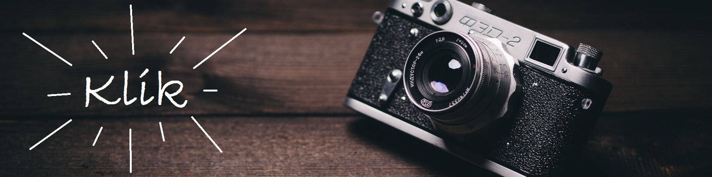

Fotografering - en leg med lys

Vi startede dette emne ud med at besøge Photocare i skive gågade, og fik nogle basiske informationer at vide omkring fotografering.
Aperture
Styrer dybden i billedet. Når man åbner op for linsen bliver der mindre dybde i et billede. Funktionen bestemmer hvor lang tid lyset har tilladelse til at komme ind i billedet.
Man kan sammenligne aperture med pupillen i vores øjne. Når man er i et mørkt rum vil vores pupil udvide sig så vi tager så meget lys ind i vores syn som mulig. Hvis man går udenfor på en dag hvor solen skinner vil vores pupiller trække sig sammen, så vi ikke bliver blændet.
Denne enhed bliver målt i f-stops (fractional stops) jo mindre f-nummert er, jo mere åben er linsen.
Shutter speed
Denne indstilling styrer hvordan bevægende objekter bliver opfanget af kameraet. Hvis man for eksemple har en shutter speed på 1/60 sekunder undgår man at kameraet ryster.
Denne indstilling bestemmer også hvor lang tid shutteren på kameraet er åben, før den tager billedet.
Dette er godt for billeder med en dæmpet belysning. Hvis man har en langsom shutter, kan man ende med at ens billeder kommer til at se snuskede ud, hvis kameraet ikke holdes stabil.
ISO - International Standards Organization
Dette er en indstilling på dit kamera, der styrer lyset i din scene. Lige fra skarp sollys til en mørk scene med en lille lyskilde kan IOS hjælpe med at fange hver detalje.
Denne funktion er meget flexible og kan stilles på mange forskellige måder, da IOS er en sensor for lys.
Den laveste indstilling for IOS er 50, 100 og 200, og er der hvor kameraet er mindst sensitiv mod lys. Ved 3200 og 6400 er den mest sensitiv mod lys.
Ved cirka 100 IOS har man en god instilling til et normal belyst billede. I et studie er det tit de bruger denne IOS setting, da de lys de har er stærke nok til at give en god illumination.
Ved at sammensætte disse 3 indstillinger i dit kamera, og har indstillet dem korrekt, vil man opnå en god exposure i ens billede.
White balance
Hvid balance er når et kamera skal kunne se de hvide farver, det er meget svært for et kamera selv at kunne sætte denne indstilling,
da farven hvid nemt kan komme til at se svag blålig, orange eller grøn ud.
Derfor har man white balance til at hjælpe med at få de korrekte farver. White balance måles i tempraturer, og der findes nogle preset indstillinger på de fleste kameraer.
Auto
Her prøver kameraet selv at bestemme hvilken tempratur billedet skal have.
Tungsten - incandescent
Denne indstilling er god til brug indenfor, hvor lyskilden kommer fra en pære. Generalt gør den farverne i billedet mere kølig.
Fluorescent
Her gives der mere livlige og varme farver til billedet.
Daylight
Dette er en af de normale tempratur indstillinger der er, og giver en lille smule varme til billedet.
Cloudy
Her bliver billedet varmet en lille smule mere op end hos daylight.
Flash
Giver et koldt men livlig effekt til billedet.
Shade
Giver en blålig tone til billedet hvis man tog det i direkte sollys.
Kelvin
Hvid balance bliver målt i kelvin, og her er der en oversigt over hvor meget kelvin der skal bruges, i forskellige situationer, for at få det
rigtige lys samt farver i et billede.
| Candelight |
1000 - 2000K |
| Tungsten |
2500 - 3500K |
| Sol opgang - sol nedgang |
3000 - 4000K |
| Fluorescent |
4000 - 5000K |
| Electronic |
5000 - 5500K |
| Dagslys med klar himmle |
5000 - 6500K |
| Overskyet |
6500 - 8000K |
| Stærkt overskyet eller skygge |
9000 - 10000K |
Kilder;
Billede: https://www.pexels.com/photo/camera-vintage-hipster-retro-8542/
White balance - ekstra info: http://www.cambridgeincolour.com/tutorials/white-balance.htm